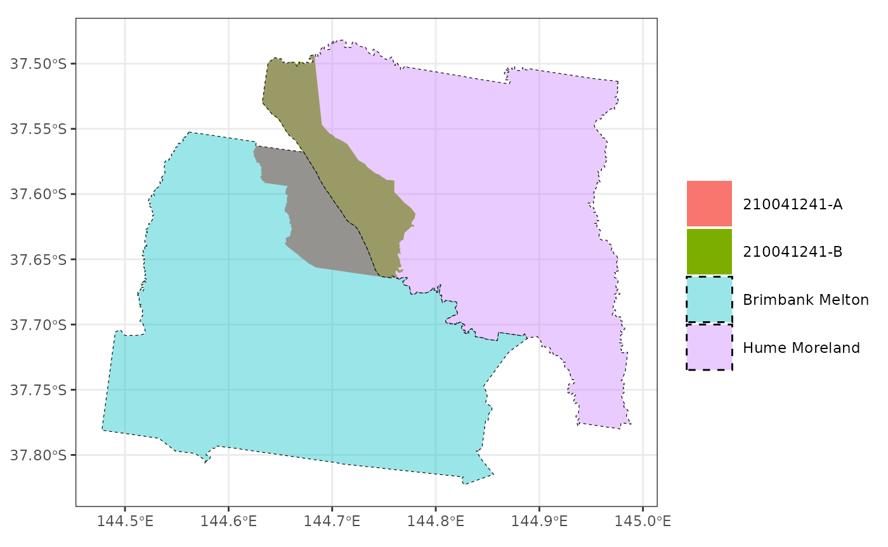

Mapping data across geographies
mapping-data.Rmd“Mapping” in the title is talking about more of a
purr::map() than a mapview::mapview() kind of
“map”. The objective is to appropriately move data from one set of
polygons to another. It is heavily inspired by the Australian context
and uses population-based correspondence tables between geographies to
perform this “mapping”.
The problem
A task that often comes up when working with spatial data is to move data across geographies for presentation. Aggregating up from SA2s to SA3s can be straight forward, but mapping data between partially (but not completely) overlapping geographies can be trickier. For example, not all SA2s are wholly contained within a single local hospital network (LHN). In these cases, it we may want to take a couple different approaches to moving the data from SA2 to LHN and presenting that data. This also happens between editions of the ASGS, say from the 2011 to the 2016 edition for SA2s.
The solutions
Solution 1: Map data from one geography to another based on population
The Australian Bureau of Statistics (ABS) release correspondence tables which allow the user to estimate the proportion of cross over between a pair of geographies (based on residential population).
These are helpful when mapping between geographies which they release editions for. For example, between the 2011 and 2016 edition of SA2s.
sa2_cg <- get_correspondence_tbl(
from_area = "sa2",
from_year = 2011,
to_area = "sa2",
to_year = 2016
)
sa2_cg
#> # A tibble: 2,426 × 3
#> sa2_maincode_2011 sa2_maincode_2016 ratio
#> <chr> <chr> <dbl>
#> 1 101011001 101051539 1
#> 2 101011002 101051540 1
#> 3 101011003 101061541 1
#> 4 101011004 101061542 1
#> 5 101011005 101061543 1
#> 6 101011006 101061544 1
#> 7 101021007 101021007 1
#> 8 101021008 101021008 1
#> 9 101021009 101021009 1
#> 10 101021010 101021010 1
#> # ℹ 2,416 more rowsSome of the SA2 codes from 2011 will be split into more than one SA2 code in the 2016 edition.
sa2_cg |> filter(ratio != 1)
#> # A tibble: 461 × 3
#> sa2_maincode_2011 sa2_maincode_2016 ratio
#> <chr> <chr> <dbl>
#> 1 102021047 102021047 0.993
#> 2 102021047 102021055 0.00658
#> 3 104011082 104011082 1.000
#> 4 107011130 107011545 0.482
#> 5 107011130 107011546 0.362
#> 6 107011130 107011547 0.157
#> 7 107041144 107041144 1.000
#> 8 107041149 107041548 0.449
#> 9 107041149 107041549 0.551
#> 10 109011172 109011172 1.000
#> # ℹ 451 more rowsThe map_data_with_correspondence() uses these
correspondence tables to map values from
one geography to another. It can be used
to map rows of data (using the ratio as a probability of
assignment to the new area). For example, if we pass two values from
this code to map_data_with_correspondence() and ask it to
map to the 2016 edition, these (may) be distributed across to different
geographies. This considers each code-value pair as a single unit to be
allocated to a new geography and is specified by the
value_type argument.
map_data_with_correspondence(
codes = c(107011130, 107011130),
values = c(1, 4),
from_area = "sa2",
from_year = 2011,
to_area = "sa2",
to_year = 2016,
value_type = "units",
seed = 2
)
#> # A tibble: 2 × 2
#> sa2_maincode_2016 values
#> <chr> <dbl>
#> 1 107011545 1
#> 2 107011546 4However, if the code-value pairs are aggregate values (i.e. number of
car crashes in that SA2), then it would be preferable to split them and
then aggregate up again in the new geographies. This is what happens
when we pass “aggregate” values with
value_type = "aggs"
map_data_with_correspondence(
codes = 107011130,
values = 10,
from_area = "sa2",
from_year = 2011,
to_area = "sa2",
to_year = 2016,
value_type = "aggs"
)
#> # A tibble: 3 × 2
#> sa2_maincode_2016 values
#> <chr> <dbl>
#> 1 107011545 4.82
#> 2 107011546 3.62
#> 3 107011547 1.57Solution 2: Adjust your geography so suit.
In some cases, you may be given data on the SA2 level but want to visualise on the LHN level. SA2s are almost always completely contained within an LHN but this isn’t always the case. If it’s still important to be able to see differences between SA2s but also differences between LHNs, it might be best to split those particular SA2s where they cross LHN boundaries.
custom_geo <- create_child_geo(
child_geo = get_polygon("sa22011"),
parent_geo = get_polygon("LHN")
)
#> The data for the Local Hospital Networks (LHN) are from here: <https://hub.arcgis.com/datasets/ACSQHC::local-hospital-networks/explore>
custom_geo |>
filter(stringr::str_detect(sa2_code_2011, "210041241")) |>
ggplot() +
geom_sf(alpha = 1, aes(fill = sa2_code_2011), size = 10, col = "transparent") +
geom_sf(
data = filter(get_polygon("LHN"), LHN_Name %in% c("Brimbank Melton", "Hume Moreland")),
aes(fill = LHN_Name),
col = "black",
linetype = "dashed",
size = 10,
alpha = 0.4
) +
labs(fill = "") +
theme_bw()
#> The data for the Local Hospital Networks (LHN) are from here: <https://hub.arcgis.com/datasets/ACSQHC::local-hospital-networks/explore>
In this graphic, the original SA2 (210041241) that crosses the LHN boundary (Brimbank Melton and Hume Moreland) is split into two parts (A and B) at the boarder.
We can map data to this new geography and so that we can visualise differences between SA2s while maintaining a separation between LHNs.
Mapping grouped data
Sometimes, we may have data for groups, with values for each group
within each geography and want to map these to a new geography.
map_data_with_correspondence() can handle these groups
nicely with the groups argument. Also in this example, we
show off that you can pass the input data as .data and
reference its columns for the codes and values
arguments rather than passing them as vectors.
sa2_2011_data <- get_polygon("sa22011") |>
as_tibble() |>
select(sa2_code_2011) |>
mutate(
ages_00_to_11 = rnorm(n = max(n()), mean = 10, sd = 2),
ages_12_to_24 = rnorm(n = max(n()), mean = 20, sd = 4),
ages_25_to_64 = rnorm(n = max(n()), mean = 25, sd = 5),
ages_65_plus = rnorm(n = max(n()), mean = 40, sd = 8)
) |>
pivot_longer(
!sa2_code_2011,
names_to = "agegrp",
values_to = "outcome_var",
names_transform = ~ str_remove(.x, "ages_") |>
str_replace("_to_", "-") |>
str_replace("_plus", "+")
)
#> Reading sa22011 file found in /tmp/RtmpFTEB6H
sa2_2016_data <- map_data_with_correspondence(
.data = sa2_2011_data,
codes = sa2_code_2011,
values = outcome_var,
groups = agegrp,
from_area = "sa2",
from_year = 2011,
to_area = "sa2",
to_year = 2016,
value_type = "aggs"
)
sa2_2016_data
#> # A tibble: 9,212 × 3
#> sa2_maincode_2016 outcome_var agegrp
#> <chr> <dbl> <chr>
#> 1 101021007 6.36 00-11
#> 2 101021008 9.51 00-11
#> 3 101021009 9.51 00-11
#> 4 101021010 9.43 00-11
#> 5 101021011 8.89 00-11
#> 6 101021012 11.3 00-11
#> 7 101031013 14.1 00-11
#> 8 101031014 6.74 00-11
#> 9 101031015 11.0 00-11
#> 10 101031016 6.27 00-11
#> # ℹ 9,202 more rows